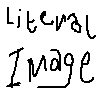

"This is a blockquote. Use this to highlight content you are directly quoting from." This span tells the source of blockquote
Name
| Header 2 | Data |
|---|---|
| Header 1 | Data |
Hello, this is a template page for anyone who'd like to contribute their own pages (and for me when i forget my own code lol). The title will be automatically added in.
Beside me is a profile box. You add a 1:1 image alongside a table with data on the bottom.
Headers
The headers whithin this div dictates what will appear in the side navigation. 'h2' tags are important stuff while 'h3' is anything related to it.
Subheader 1
You can add as many subheaders you's like! Keep in mind that they must have unique names, or else it won't anchor properly. Just make sure to always start with a 'h2' tag or it till break (I swear I'll fix that eventually).

Subheader 2
You can add images that will stay at the right side. The 'alt' will be the caption of the image. Use an 'hr' tag with the class of 'clear' to add a invisible boundary for float elements.
Subheader 3
It will ensure that the text after the 'hr' tag will stay uneffected. Sectioning things with normal 'hr' tags isn't necessary but it does help things long neater.
Attatchments
Gallery
Still working on this
Youtube Videos
Links and References
Own Articles
To link pages that are whithin the site, just do this. It will go through the articles we have and automatically link it.
Leaving the inside of the lilnk blank will automatically add the thing you are referencing:
When making new pages, please make sure it's all in lowercaps.
Outside Link
To link outside sources just use this! Reference Name It will automatically sort it self numerically! at the bottom of the page
Just add the link you're referencing to in 'data-ref'Remember to Link
Leaving it as '#' will state that it is missing.This link is Missing
Notes
It isn't a perfect system and I wouldn't blame anyone for not wanting to take part in it. With this in mind, I give you all full permission to copy the content here and host it in an actual wiki site. The more people archiving, the better :D
This entire website is loosely held together glue and sticks but I suppose that is just the neocities way,,